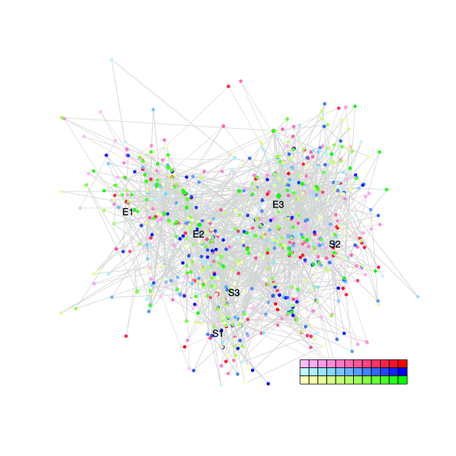
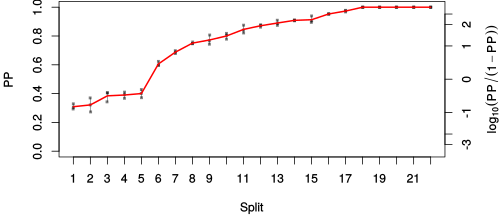
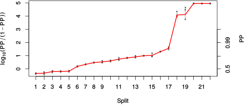

| chain # | burnin | subsample | Iterations (remaining) | command line | subdirectory | directory |
|---|---|---|---|---|---|---|
| 1 | 10000 | 1 | 90000 | /usr/local/bali-phy-3.0-beta2/bin/bali-phy cat_E6_E7_AA_red3_v2_Lambda_Alpha_all4Manatees_BetaGamma.fas -s 35242 -n cat_E6_E7_red3_v2_Lambda_Alpha_all4Manatees_BetaGamma_c1 | cat_E6_E7_red3_v2_Lambda_Alpha_all4Manatees_BetaGamma_c1-1 | /home/willemse/data/trees/BaliPhy/cat_E6_E7/red3_v2 |
| 2 | 10000 | 1 | 90000 | /usr/local/bali-phy-3.0-beta2/bin/bali-phy cat_E6_E7_AA_red3_v2_Lambda_Alpha_all4Manatees_BetaGamma.fas -s 83495 -n cat_E6_E7_red3_v2_Lambda_Alpha_all4Manatees_BetaGamma_c2 | cat_E6_E7_red3_v2_Lambda_Alpha_all4Manatees_BetaGamma_c2-1 | /home/willemse/data/trees/BaliPhy/cat_E6_E7/red3_v2 |
| 3 | 10000 | 1 | 90000 | /usr/local/bali-phy-3.0-beta2/bin/bali-phy cat_E6_E7_AA_red3_v2_Lambda_Alpha_all4Manatees_BetaGamma.fas -s 78381 -n cat_E6_E7_red3_v2_Lambda_Alpha_all4Manatees_BetaGamma_c3 | cat_E6_E7_red3_v2_Lambda_Alpha_all4Manatees_BetaGamma_c3-1 | /home/willemse/data/trees/BaliPhy/cat_E6_E7/red3_v2 |
| P(data|M) = -11716.592 +- 0.424 | Complete sample: 22013 topologies | 95% Bayesian credible interval: 12577 topologies |
Phylogeny Distribution

| Partition support: Summary |
| Partition support graph: SVG |
{kind=link}
| 50% consensus | Newick (+PP) | SVG | |||||
| 66% consensus | Newick (+PP) | SVG | |||||
| 80% consensus | Newick (+PP) | SVG | |||||
| 90% consensus | Newick (+PP) | SVG | |||||
| 95% consensus | Newick (+PP) | SVG | |||||
| 99% consensus | Newick (+PP) | SVG | |||||
| 100% consensus | Newick (+PP) | SVG | |||||
| MAP | Newick (+PP) | SVG | |||||
| greedy | Newick (+PP) | SVG |
{kind=link}
{kind=link}
{kind=link}
{kind=link}
{kind=link}
{kind=link}
{kind=link}
{kind=link}
Alignment Distribution
Partition 1
| Diff | Min. %identity | # Sites | Constant | Informative | ||||
|---|---|---|---|---|---|---|---|---|
| Initial | FASTA | HTML | Diff | 0.837% | 332 | 1 (0.301%) | 312 (94%) | |
| Best (WPD) | FASTA | HTML | AU | 9.8% | 639 | 11 (1.72%) | 248 (38.8%) |
Mixing
{kind=link}
{kind=link}
| burnin (scalar) | ESS (scalar) | ESS (partition) | ASDSF | MSDSF | PSRF-CI80% | PSRF-RCF |
|---|---|---|---|---|---|---|
| 1267 | 114.1 | 181.126 | 0.015 | 0.049 | 1.001 | 1.013 |
Projection of RF distances for the first 3 chains3D | Variation of split PPs across chains |
Scalar variables
| Statistic | Median | 95% BCI | ACT | ESS | burnin | PSRF-CI80% | PSRF-RCF |
|---|---|---|---|---|---|---|---|
| prior | -718.5 | (-778.1, -663.7) | 211.2 | 1278 | 906 | 1 | 0.9975 |
| prior_A1 | -776.4 | (-834.5, -724.6) | 198.8 | 1357 | 249 | 1 | 0.9971 |
| likelihood | -1.168e+04 | (-1.172e+04, -1.165e+04) | 69.57 | 3880 | 342 | 1 | 0.9986 |
| logp | -1.24e+04 | (-1.245e+04, -1.236e+04) | 190.4 | 1417 | 1267 | 1 | 0.9971 |
| Heat.beta | 1 | ||||||
| Scale1 | 12.59 | (8.682, 17.43) | 1.007 | 268021 | 101 | 1 | 0.9987 |
| S1.F.pi.A | 0.06391 | (0.05546, 0.07266) | 8.091 | 33369 | 137 | 0.9995 | 0.9973 |
| S1.F.pi.R | 0.06546 | (0.05651, 0.07507) | 10.23 | 26402 | 935 | 1 | 0.9977 |
| S1.F.pi.N | 0.0325 | (0.02692, 0.03863) | 8.057 | 33512 | 316 | 0.9995 | 1.013 |
| S1.F.pi.D | 0.0491 | (0.04127, 0.05708) | 14.28 | 18911 | 306 | 1 | 0.9973 |
| S1.F.pi.C | 0.05396 | (0.04441, 0.06411) | 7.946 | 33980 | 672 | 1 | 0.9938 |
| S1.F.pi.Q | 0.0398 | (0.03392, 0.04592) | 8.601 | 31392 | 552 | 1 | 1.001 |
| S1.F.pi.E | 0.0621 | (0.05348, 0.07112) | 23.66 | 11409 | 441 | 1 | 1.001 |
| S1.F.pi.G | 0.07253 | (0.06117, 0.08435) | 9.203 | 29338 | 206 | 1 | 0.9982 |
| S1.F.pi.H | 0.02699 | (0.02145, 0.03289) | 8.176 | 33023 | 420 | 0.9999 | 1.003 |
| S1.F.pi.I | 0.04739 | (0.04039, 0.05484) | 8.643 | 31240 | 473 | 1 | 1.001 |
| S1.F.pi.L | 0.1196 | (0.1062, 0.1331) | 21.12 | 12781 | 460 | 0.9998 | 1.002 |
| S1.F.pi.K | 0.03314 | (0.0275, 0.03916) | 8.405 | 32124 | 137 | 0.9998 | 0.9976 |
| S1.F.pi.M | 0.007686 | (0.00515, 0.01052) | 7.759 | 34799 | 207 | 1 | 1.001 |
| S1.F.pi.F | 0.04795 | (0.03968, 0.05638) | 8.213 | 32876 | 754 | 0.9997 | 1.001 |
| S1.F.pi.P | 0.04154 | (0.0336, 0.04998) | 10.27 | 26292 | 489 | 0.9999 | 1.005 |
| S1.F.pi.S | 0.05982 | (0.05214, 0.0677) | 8.022 | 33655 | 350 | 1 | 0.9989 |
| S1.F.pi.T | 0.05245 | (0.0449, 0.06041) | 8.048 | 33550 | 132 | 1 | 0.996 |
| S1.F.pi.W | 0.01634 | (0.01141, 0.02172) | 7.703 | 35052 | 351 | 1 | 1.001 |
| S1.F.pi.Y | 0.04667 | (0.03857, 0.0551) | 9.486 | 28464 | 449 | 1 | 0.9976 |
| S1.F.pi.V | 0.05911 | (0.05097, 0.06763) | 9.281 | 29093 | 324 | 1 | 0.9941 |
| I1.RS07.meanIndelLengthMinus1 | 6.082 | (4.629, 7.783) | 86.18 | 3132 | 319 | 1.001 | 0.9992 |
| I1.RS07.logLambda | -4.39 | (-4.646, -4.148) | 11.65 | 23168 | 146 | 0.9999 | 1 |
| |A1| | 628 | (597, 661) | 2367 | 114 | 1123 | 0.9646 | 0.9726 |
| #indels1 | 87 | (78, 94) | 165.2 | 1634 | 256 | 0.871 | 0.9986 |
| |indels1| | 595 | (542, 653) | 959.5 | 281 | 392 | 0.9955 | 0.9878 |
| #substs1 | 2285 | (2253, 2311) | 1377 | 196 | 757 | 0.9737 | 0.9839 |
| Scale1*|T| | 15.99 | (15.2, 16.79) | 5.813 | 46446 | 212 | 1.001 | 1.001 |
| |A| | 628 | (597, 661) | 2367 | 114 | 1123 | 0.9646 | 0.9726 |
| #indels | 87 | (78, 94) | 165.2 | 1634 | 256 | 0.871 | 0.9986 |
| |indels| | 595 | (542, 653) | 959.5 | 281 | 392 | 0.9955 | 0.9878 |
| #substs | 2285 | (2253, 2311) | 1377 | 196 | 757 | 0.9737 | 0.9839 |
| |T| | 1.271 | (0.8745, 1.746) | 1 | 270003 | 101 | 1 | 0.9998 |